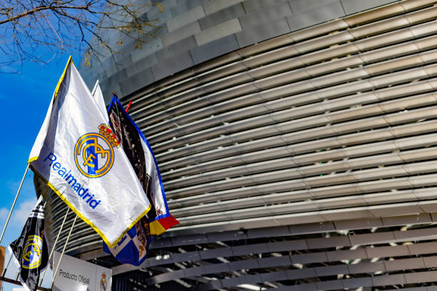

Leyendas del Real Madrid
Descubre algunas de las figuras más icónicas que han moldeado la historia del Real Madrid, uno de los clubes más exitosos del mundo.
Alfredo Di Stéfano
Una leyenda verdadera que jugó para el Real Madrid entre 1953 y 1964, ayudando al club a ganar numerosos títulos nacionales e internacionales.
Saber másCristiano Ronaldo
Uno de los mejores jugadores de todos los tiempos, Ronaldo se convirtió en el máximo goleador del Real Madrid y lideró al club a múltiples títulos de la Champions League.
Saber más
Raúl González
Raúl fue el símbolo del Real Madrid durante más de una década. Conocido por su liderazgo y habilidad para marcar en momentos cruciales.
Saber másTrofeos del Real Madrid
| Trofeo | Número de Títulos |
|---|---|
| UEFA Champions League | 15 |
| La Liga | 35 |
| Copa del Rey | 20 |
| Supercopa de la UEFA | 5 |
| Mundial de Clubes de la FIFA | 5 |
Historia del Real Madrid
Fundado en 1902, el Real Madrid es uno de los clubes más antiguos y prestigiosos del mundo. A lo largo de su historia, ha ganado más de 30 títulos de La Liga, 15 Champions League y numerosos trofeos nacionales e internacionales. Con leyendas como Di Stéfano, Raúl, Cristiano Ronaldo y muchos otros, el Real Madrid ha dejado una huella imborrable en el fútbol mundial.
El club se ha destacado no solo por su éxito dentro del campo, sino también por su capacidad de adaptarse a los tiempos modernos, convirtiéndose en una referencia tanto deportiva como comercial. Desde sus humildes comienzos, el Real Madrid ha sabido convertirse en una institución mundial, con millones de aficionados en todo el planeta.
Récords del Real Madrid
| Récord | Detalles |
|---|---|
| Máximo Goleador | Cristiano Ronaldo (451 goles) |
| Más Apariciones | Raúl González (741 partidos) |
| Más Títulos de Champions como Jugador | Paco Gento (6 títulos) |
| Mayor Victoria en La Liga | Real Madrid 11-1 Barcelona (1943) |